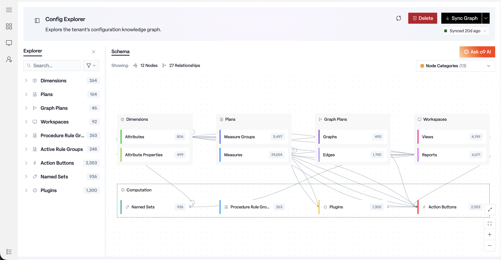
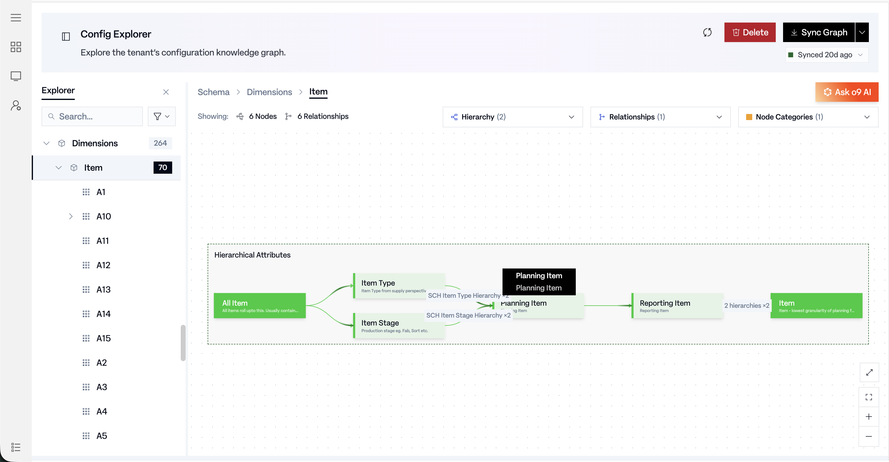
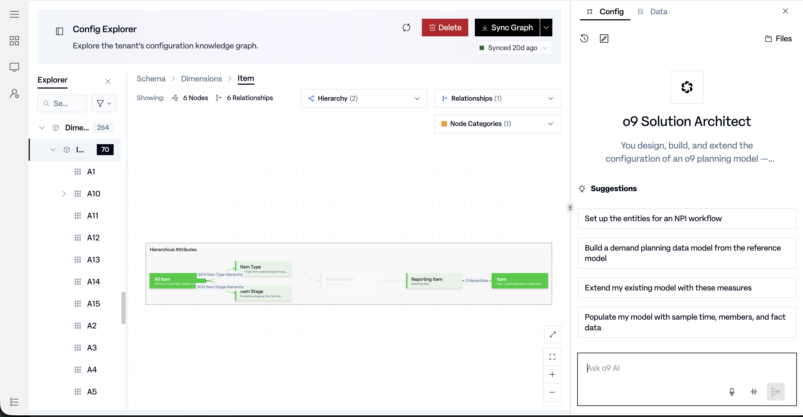

Problem
The legacy configuration UI was slow, click-heavy, and genuinely frustrating to use day to day, with no visual way to understand how a tenant was actually configured before changing it. Solution architects and implementation teams needed faster answers to basic questions: what entities already exist on this tenant, how are dimensionsCategories used to slice and group data, e.g. product, location, or time. and rules actually connected, and what data backs a given part of the model. Instead, they got a UI that made even those basic questions slow to answer.
Explore and understand an existing tenant configuration, or use agentic AI to extend it or seed a new solution path, without ever losing the configuration context you started from.
Users
Solution architects and implementation consultants who configure tenants day to day are the core users, alongside internal model builders and pre-sales teams seeding greenfield demo solutions. All of them were previously served by separate tools for browsing config, inspecting data, and prompting an AI assistant, with no shared context between the three.
Why existing approaches failed
Getting an answer meant piecing it together across separate tools: one screen to browse config, another to inspect the data behind it, and a completely disconnected chat interface if you wanted AI help, which meant re-describing by hand whatever you'd just found. None of those tools shared a data model, so nothing carried over between them, and every question about "how is this tenant actually set up" started from zero.
Product insight
Exploration and action don't need to be separate systems. The same graph that explains a tenant to a human is the same graph an agent needs in order to act on it, so instead of bolting an AI assistant onto an existing browsing UI, both were built against one shared graph-aware surface. Understanding a tenant and extending it became one continuous flow instead of two disconnected tools joined by copy-paste.
System approach
Explorer and Schema, one graph
The page splits into an Explorer, search-first, grouped by category, and a Schema view that renders the same information visually: a tenant config map with relationship lines instead of a flat list. Selecting anything in one updates the other, and drilling into any entity scopes the view down to it without losing the path back to the broader map.

One action set, every node
Every entity in the graph exposes the same three actions, regardless of entity type: Traverse to, pivot to related entities without losing context; Add to Chat, hand the entity to the AI assistant as structured context; and View Data, inspect what backs the entity without leaving the page. The same action set scales to a multi-selection, so comparing several entities doesn't require a separate, heavier workflow.

Two assistants, one panel
Config tab
The o9 Solution Architect: designs, builds, and extends model structure, grounded in whatever entities were passed in via Add to Chat.
Data tab
The o9 EKG Data Populator: populates data into an already-defined model, kept explicitly separate from structural changes.
Live, on the same canvas
As the assistant works, whatever it builds or proposes shows up as a live preview directly on the Explorer and Schema canvas the configurator is already looking at, not as a wall of text in a chat transcript they'd have to cross-reference by hand. The goal was a workspace that stays highly visual and easy to read even while an agent is actively changing it underneath, so a configurator can watch a build happen instead of waiting for a summary of it afterward.

Key PM decisions
- Search-first, not browse-first. Implementers usually know roughly what they're looking for, so search is the default entry point and browsing the category tree is the fallback, not the other way around.
- One identical action set across every entity type, deliberately not customized per type. A configurator has to learn the interaction model exactly once, then it holds everywhere, which matters more at scale than a slightly more tailored menu per entity.
- A hard split between the Config and Data assistant tabs. Structural changes and data population are different classes of risk, so they're never allowed to share one ambiguous chat thread where it's unclear which kind of change a prompt is about to make.
Human-in-the-loop & trust
Add to Chat inserts a visible, editable token into the composer rather than silently attaching context behind the scenes, so a user can see and correct exactly what the assistant is about to reason over before sending anything. View Data exists specifically so a user can verify what's actually behind an entity before deciding to act on it, rather than trusting a label alone.
Empty states are treated as a trust question, not a cosmetic one: if a selected graph or entity has no data or no relationships to show, the page says so explicitly rather than rendering a blank canvas a user might mistake for a loading or broken state.
Tradeoffs & risks
Multi-select on graph nodes currently lives behind a right-click context menu, which is discoverable for power users but easy to miss for a first-time configurator, and remains an open product question rather than a settled one: whether it needs a more obvious primary affordance. Similarly, an empty "View Data" result for a technically valid graph pair can still read as ambiguous to a new user, since "no rows" and "something's wrong" look similar at a glance, an area still being refined rather than fully solved.
Impact
Config Designer UI runs on the Solution Architect agent built as part of Config Model Extension, so the same reasoning that plans a build is what drives what the UI shows and explains. That replaces a workflow implementers actively avoided with one that's fast, transparent, and self-explanatory, and it doubles as a review surface for checking an agent-proposed plan before committing it to a tenant.